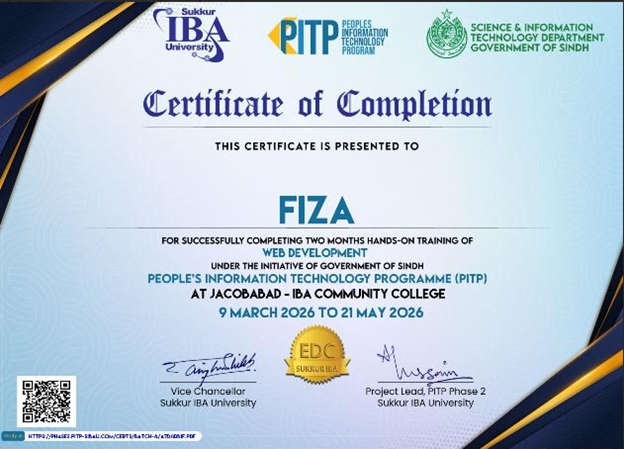

Fiza
Frontend Developer
Email: fizasoomro041@gmail.com
Github: https://github.com/fizas-soomro
Linkedin: https://www.linkedin.com/in/fiza-soomro-2015473b6/
Addres: jhat patt road ward no 2 house no 678 dangar muhallah jacobabad sindh pakistan;
Phone: +92 3192460446
Career Obejctives
I am a motivated and hardworking individual with a strong desire to build my career in the field of technology, especially web development. I enjoy learning new skills and applying them in practical projects to gain real-world experience. I have a good understanding of modern web technologies and I am continuously improving my knowledge to stay updated with current trends. I am a responsible and dedicated person who believes in completing tasks on time with full attention to quality and detail. I work well both independently and as part of a team, and I always try to give my best in every task I take on. My goal is to grow professionally, improve my technical skills, and contribute positively to any organization I work with.
Education
Intermediate (FSC):
IBA Community College Jacobabad
2023-2025
subjects:Biology, Physics, Chemistry
Grade: A 73%
Matriculation (Science Goroup):
IBA Community College Jacobabad
2021-2023
Grade : A 73%
Skills
- HTML5
- CSS3
- JavaScript
- Responsive Design
- Git & GitHub
- Python
Projects
Glowverse Beauty Website
Glowverse is a modern platform designed to bring creativity, inspiration, and unique experiences together. Explore a beautiful digital space where ideas glow and connections grow.
Calculator
A simple and efficient calculator designed to perform basic mathematical operations quickly and accurately. It helps users solve calculations with an easy-to-use interface
Image Gallery
An interactive image gallery that allows users to view, organize, and explore collections of images in a clean and attractive layout. It provides a smooth visual experience for showcasing photos and artwork.
Martini Resturant Website
Martini Restaurant is a stylish dining website that showcases delicious cuisine, menu options, and a memorable dining experience. It provides customers with an elegant way to explore food, services, and restaurant details.
Certificates

Web Development Certificate
Certificate of completion in Web Development covering HTML, CSS and JavaScript.

AI Certificate
Certificate for completing Artificial Intelligence Course

Programming Certificate
Certificate of completing Data Structre in Python